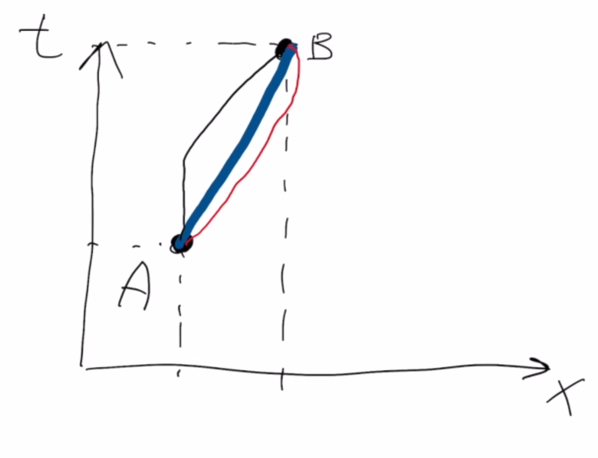

Forrige side🙂 🙁Maksimal aldringPADLET
Vi går et øyeblikk tilbake til eksemplet med de 3 bilene som var samlet på et sted i et event A, deretter kjørte med forskjellige hastigheter til de igjen møttes i et event B. Her ser du det igjen i tidrommet:

La oss si at det tok 10 sekunder fra A til B i bilen som kjørte med konstant hastighet. Kan du tegne inn en liten prikk på linja med konstant hastighet for hver gang klokka i denne bilen tikker? (regn med at den tikker en gang i sekundet). Tegn deretter også inn tilsvarende prikker på de andre to verdenslinjene. Trenger kun å være kvalitativt rett, altså omtrentlig riktig relativ avstand og antall prikker.